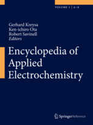

| 6 |
"Redox Oxides for Thermochemical Energy Storage" A.J. Carrillo, J.L.M. Rupp, J.M. Coronado S. Skinner (Ed.) Royal Society of Chemistry Book, UK (2020) |
||
|---|---|---|---|
| 5 |
"Strain and Interfaces for Metal Oxide Based Memristive Devices" S. Schweiger, J.L.M. Rupp N. Pryds (Ed.) Elsevier Science & Technology Books, Metal Oxides Series (2017) |
||
| 4 |
"Elektrochemische Materialforschung für die Energiewende" in Energie im Wandel
Featured in Technik aktuell .
|
||
| 3 |
"Solid Oxide Fuel Cells: Introduction" in Encyclopedia of Applied Electrochemistry. J.L.M. Rupp Springer, New York, Heidelberg, London, Dordrecht (2014) |
 | |
| 2 |
Nanoimpact on Electrode and Electrolyte Layers with MEMS Technique Y.D. Premchand, A. Bieberle-Hütter, H. Galinski, J.L.M. Rupp, T.M. Ryll, B. Scherrer, R. Tölke, Z. Yang, A. Evans, A. Harvey, L. Xu, L.J. Gauckler |
||
| 1 |
Handbook of Fuel Cells - Fundamentals, Technology and Applications, Vol. 5 W. Vielstich, H. Yokokawa, and H.A. Gasteiger (Eds.) John Wiley & Sons, Chichester, UK (2009) |